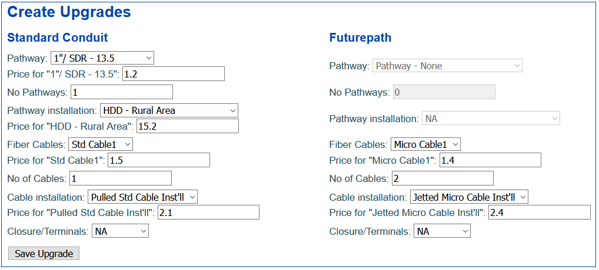

Please follow the next step guide to get the most out of this tool.
Basic fields are: Region, units (feet or meters), project length, time value of money in percentage and select two products for conduit and FuturePath with corresponding prices and number of pathways in your comparison. Then, select installation type and the price per unit of length. Please bear in mind that decimal numbers use dot instead of comma.
You can also choose a fiber cable and input a price accordinly (material and installation costs). There is an option to include accesories (closures, terminals, couplers, splicers, etc) per custom distance.
Press "Go to Analysis" button to compare Conduit vs Futurepath scenarios, find total and break down costs to compare your solution
Go to the "Upgrades" tab in the upper part of the website and fill in the fields following the same rules described above. When you finish, click on "Save Upgrade" button to create the Upgrade profile. You can create as many as you want and delete in the right part of each upgrade.
Load your upgrades matching a year for each option

Click on "Go to Analysis button" again and check your results comparing Conduit vs Futurepath including costs during a 10 years period.